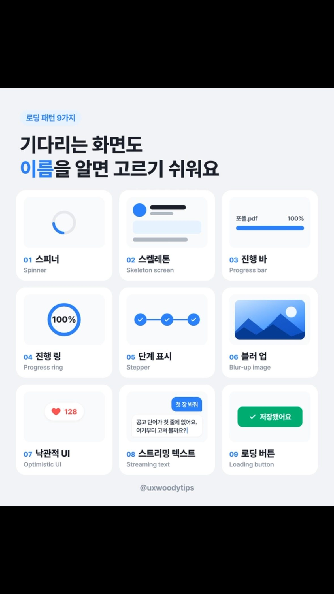

테크 · 릴스 · 2026-11-23
로딩 화면 패턴 9가지와 그 이름
디자인 리뷰나 AI에게 화면을 요청할 때 로딩 패턴의 정확한 이름을 말하면 결과물이 달라지므로, 스피너부터 로딩 버튼까지 9가지 로딩 패턴 이름을 정리했다.

- 디자인 리뷰에서 그냥 로딩을 넣어 달라고 하면 개발자는 대부분 스피너를 넣는다.
- 로딩 패턴의 이름을 구체적으로 말하면 만들어지는 화면이 달라지며, AI에게 화면을 요청할 때도 마찬가지다.
- 로딩 패턴 9가지는 스피너, 스켈레톤, 진행 바, 진행 링, 단계 표시, 블러 업, 낙관적 UI, 스트리밍 텍스트, 로딩 버튼이다.
- 진행 바와 진행 링은 0%에서 100%까지 진행률을 수치로 보여 주는 패턴이다.
- 낙관적 UI는 좋아요 수가 127에서 128로 바로 반영되는 것처럼 결과를 먼저 보여 주는 패턴이다.
- 로딩 버튼은 '저장하기'에서 '저장했어요'로 버튼 자체가 상태를 보여 주는 패턴이다.
- 작성자는 각 패턴을 언제 쓰는지 고정 댓글에 한 줄씩 정리해 두겠다고 밝혔다.